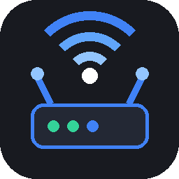
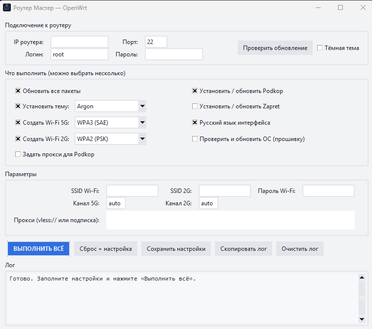
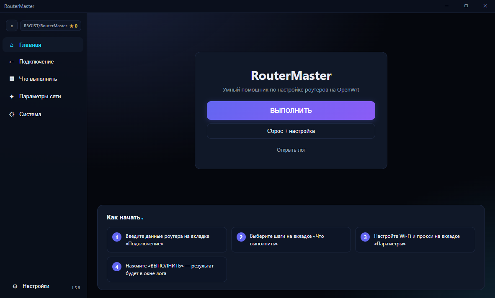

RouterMasterRouterMaster сам сбросит роутер, установит обход блокировок, настроит Wi-Fi, тему интерфейса и русский язык. Никаких команд и инструкций на 50 страниц — просто нажмите «Выполнить».
Вы выбираете галочки, RouterMaster выполняет работу по SSH — так же, как это сделал бы опытный специалист.
Полный сброс роутера до заводских настроек, установка пароля и полная настройка — одной кнопкой. Обычно 3–4 минуты.
Установка и обновление Podkop со всеми списками: YouTube, TikTok, Discord, Telegram, Google и ещё 16 списков — всё под ключ.
Zapret-Manager + стратегия для обхода блокировок. Устанавливается, включается и удаляется автоматически.
Argon, Proton2025 или Bootstrap — установка из интернета автоматически, тёмная и светлая версии.
Отдельные SSID, каналы и тип шифрования для каждой сети: WPA3, WPA2, переходный режим или открытая сеть.
Вставьте ссылку vless:// или подписку — Podkop сам настроится и перезапустится.
Интерфейс роутера станет на русском — локализация LuCI устанавливается автоматически.
Проверка новых версий OpenWrt и обновление системы роутера — с предупреждением перед перезагрузкой.
Программа сама проверяет новые версии на GitHub и тихо обновляется — вы даже не заметите.
Никакой командной строки и специальных знаний. Достаточно знать пароль от роутера.
Соедините роутер с компьютером кабелем в LAN-порт. Программа найдет его автоматически — по умолчанию 192.168.1.1.
Введите пароль SSH, отметьте галочками нужные действия: Wi-Fi, обход блокировок, тема, русский язык, прокси.
Программа подключится, сделает всю работу, перезагрузит роутер и сообщит, когда всё готово. Обычно 3–4 минуты.
Всё на одном экране: подключение, шаги и журнал работы. Светлая и тёмная тема переключаются галочкой.


Установщик сам создаст ярлыки на рабочем столе и в меню «Пуск».
Нажмите «Скачать для Windows» — файл всего 18 МБ, без регистрации и смс.
Два клика по установщику — «Далее» → «Установить». Всё.
Ярлык на рабочем столе. Дальше — просто следуйте трём шагам выше.
Скачайте, подключите роутер, нажмите одну кнопку — и интернет заработает так, как надо. YouTube, игры, мессенджеры — всё открывается на всех устройствах дома.
Скачать для Windows · бесплатно